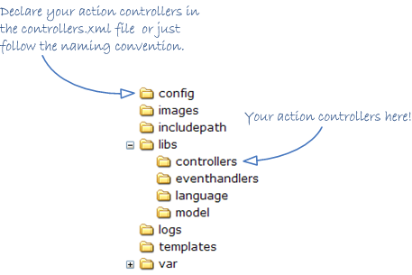

<table cellpadding="10" cellspacing="0" width="100%" border="0"><tr><td valign="top">
<div><a name=""></a><h1>The Controller</h1>
  <div class="ref-purpose">Handling user requests</div>
 <div class="ref-synopsis"></div>
<h2>Table of Contents</h2>
<ul>

<a href="ActionController/tutorial_ActionController.pkg.html#intro">What's an Action Controller?</a><br />

<a href="ActionController/tutorial_ActionController.pkg.html#controller_and_action_code">Requesting actions</a><br />

<a href="ActionController/tutorial_ActionController.pkg.html#naming_convention_and_location">Naming convention and location</a><br />

&nbsp;&nbsp;&nbsp;<a href="ActionController/tutorial_ActionController.pkg.html#naming_convention_and_location.controller_suffix">Controller name</a><br />

&nbsp;&nbsp;&nbsp;<a href="ActionController/tutorial_ActionController.pkg.html#naming_convention_and_location.controller_file_location">Controller file and location</a><br />

<a href="ActionController/tutorial_ActionController.pkg.html#defining_actions">Defining Actions</a><br />

<a href="ActionController/tutorial_ActionController.pkg.html#pre_and_post_execution">Defining common tasks: preExecute and postExecute methods</a><br />

<a href="ActionController/tutorial_ActionController.pkg.html#validating_action_executions">Validating Action executions</a><br />
</ul>

 <p></p>
 <span><a name="intro"></a><h2>What's an Action Controller?</h2><p>An Action Controller, or simply a Controller, is a class in charge of the execution of concrete tasks in response to certain events, typically user requests.</p>
  <div class="messagebox floatnote metadata plainlinks"><div class="floatnoteicon"></div><br><p>See the <a href="Lion/tutorial_Lion.MVC.pkg.html">Model-View-Controller</a> section in order to know more about MVC pattern and how it's implemented in Lion</p></div>
  <p>It's important to note the difference between the concepts action and controller:<br />
  A <strong>controller</strong> is a class in charge of the execution of one or more <strong>actions</strong>, while an action is the minimal execution unit, usually a controller's method, that perform a set of task in order to satisface an user's request.</p>
  <p>All requests reference a pair Controller-Action to be executed, it is: An action to be executed and the controller class in charge to handle that execution.</p>
  <p>In Lion, an action controller is a class implementing the <a href="ActionController/__IActionController.html">__IActionController</a>, but usually a class subclassing the <a href="ActionController/__ActionController.html">__ActionController</a>.</p>
  <p>However, our recomendation is to just subclass the <a href="ActionController/__ActionController.html">__ActionController</a> class that already implements the <a href="ActionController/__IActionController.html">__IActionController</a> to define action controllers.</p></span>
 <span><a name="controller_and_action_code"></a><h2>Requesting actions</h2><p>Each request in Lion references the execution of an action.<br />
  Because actions are handled by controllers, the request need to provide information regarding the controller to be used as well as the action to be executed.<br />
  In fact, every request is resolved in a pair Controller-Action, it is, which action to execute and which controller to handle the execution.</p>
  <p>Both the controllers and the actions are identified by codes. So, each request provides enough information to resolve the controller code as well as the action code</p>
  <p>i.e. The request <u>http://yourdomain/foo.bar.html</u> references the use of the controller identified as 'foo' to execute the action identified as 'bar'.
  Is a Lion task to resolve which class corresponds to the controller code 'foo', while is a controller task to execute the action identified as 'bar'.</p>
  <p>When Lion resolves the controller to use, it calls to the <a href="ActionController/__IActionController.html#methodexecute">__IActionController::execute()</a> method by passing the action code as argument.<br />
  However, by subclassing the <a href="ActionController/__ActionController.html">__ActionController</a>, we just need to define methods following some naming conventions.</p></span>
 <span><a name="naming_convention_and_location"></a><h2>Naming convention and location</h2><p>Lion is enough flexible to allow whatever name and location for your action controllers. There are not restrictions in that sense.<br />
  However there are some naming conventions and predefined locations that make easier the creation and enablement of action controllers:</p>
  <p><ul><li>Use the suffix <strong>'Controller'</strong> for all your controller classes.</li>
    <li>Define each controller in a single file with the same name of the controller followed by the suffix <strong>'.class.php'</strong></li>
    <li>Place your controllers in the <strong>/libs/controllers</strong> directory</li></ul></p>
  <p></p>
  <a name="naming_convention_and_location.controller_suffix"></a><h3>Controller name</h3><p>The fact of defining a controller class is not enough to be able to execute it.<br />
    To enable a controller in Lion we need to create an entry in the <strong>app/config/controllers.xml</strong>, associating a code to each one.</p>
    <p>i.e.
    <div class="listing"><pre><ol><li><div class="src-line"><span class="src-php">&lt;?</span><span class="src-id">xml&nbsp;version&nbsp;</span>=&nbsp;<span class="src-str">&quot;1.0&quot;&nbsp;</span><span class="src-id">standalone</span>=<span class="src-str">&quot;yes&quot;</span><span class="src-php">?&gt;</span></div></li>
<li><div class="src-line">&lt;configuration&gt;</div></li>
<li><div class="src-line">&nbsp;</div></li>
<li><div class="src-line">&nbsp;&nbsp;&lt;controller-definitions&gt;</div></li>
<li><div class="src-line">&nbsp;</div></li>
<li><div class="src-line">&nbsp;&nbsp;&nbsp;&nbsp;&lt;controller&nbsp;code=&quot;FooBar&quot;&nbsp;class=&quot;FooBarController&quot;/&gt;</div></li>
<li><div class="src-line">&nbsp;</div></li>
<li><div class="src-line">&nbsp;&nbsp;&lt;/controller-definitions&gt;</div></li>
<li><div class="src-line">&nbsp;</div></li>
<li><div class="src-line">&lt;/configuration&gt;</div></li>
</ol></pre></div>
    In this entry we are specifying that the controller code 'FooBar' correspond to the action controller BooBarController.</p>
    <p>However, there is a special rule designed for all the controllers that haven't been declared in this file:
    <div class="listing"><pre><ol><li><div class="src-line"><span class="src-php">&lt;?</span><span class="src-id">xml&nbsp;version&nbsp;</span>=&nbsp;<span class="src-str">&quot;1.0&quot;&nbsp;</span><span class="src-id">standalone</span>=<span class="src-str">&quot;yes&quot;</span><span class="src-php">?&gt;</span></div></li>
<li><div class="src-line">&lt;configuration&gt;</div></li>
<li><div class="src-line">&nbsp;</div></li>
<li><div class="src-line">&nbsp;&nbsp;&lt;controller-definitions&gt;</div></li>
<li><div class="src-line">&nbsp;</div></li>
<li><div class="src-line">&nbsp;&nbsp;&nbsp;&nbsp;&lt;controller&nbsp;code=&quot;*&quot;&nbsp;class=&quot;*Controller&quot;/&gt;</div></li>
<li><div class="src-line">&nbsp;</div></li>
<li><div class="src-line">&nbsp;&nbsp;&lt;/controller-definitions&gt;</div></li>
<li><div class="src-line">&nbsp;</div></li>
<li><div class="src-line">&lt;/configuration&gt;</div></li>
</ol></pre></div>
    In this entry we are specifying that a controller code corresponds to the controller with same name plus the suffix 'Controller'.<br />
    i.e. the controller code 'FooBar' corresponds to the controller FooBarController</p>
    <p>This is the reason because we recomend to use the 'Controller' suffix in controller classes.</p><br />
  <a name="naming_convention_and_location.controller_file_location"></a><h3>Controller file and location</h3><p>The file <strong>/app/config/includepath.xml</strong> contains the following mapping rule:</p>
    <div class="listing"><pre><ol><li><div class="src-line"><span class="src-php">&lt;?</span><span class="src-id">xml&nbsp;version&nbsp;</span>=&nbsp;<span class="src-str">&quot;1.0&quot;&nbsp;</span><span class="src-id">standalone</span>=<span class="src-str">&quot;yes&quot;</span><span class="src-php">?&gt;</span></div></li>
<li><div class="src-line">&lt;classes&gt;</div></li>
<li><div class="src-line">&nbsp;</div></li>
<li><div class="src-line">&nbsp;&nbsp;...</div></li>
<li><div class="src-line">&nbsp;</div></li>
<li><div class="src-line">&nbsp;&nbsp;&lt;!--&nbsp;Controllers&nbsp;--&gt;</div></li>
<li><div class="src-line">&nbsp;&nbsp;&lt;cluster&nbsp;name=&quot;Controllers&quot;&nbsp;path=&quot;/libs/controllers&quot;&gt;</div></li>
<li><div class="src-line">&nbsp;&nbsp;&nbsp;&nbsp;&lt;class&nbsp;name=&quot;*&quot;&nbsp;file=&quot;*.class.php&quot;/&gt;</div></li>
<li><div class="src-line">&nbsp;&nbsp;&lt;/cluster&gt;</div></li>
<li><div class="src-line">&nbsp;</div></li>
<li><div class="src-line">&nbsp;&nbsp;...</div></li>
<li><div class="src-line">&nbsp;</div></li>
<li><div class="src-line">&lt;/classes&gt;</div></li>
</ol></pre></div>
    <p>This mapping rule let Lion know that any file placed in <strong>libs/controllers</strong> with the suffix '.class.php' corresponds to a class with the same name without the suffix.</p>
    <p>So, by placing controller files in that directory and following the naming convention, it's not needed to declare explicitly the location of your controllers in the includepath.xml file.</p><br /></span>
 <span><a name="defining_actions"></a><h2>Defining Actions</h2><p>By subclassing the <a href="ActionController/__ActionController.html">__ActionController</a> class, it's really easy to define actions by just defining method with the following naming conventions:</p>
  <p><div class="messagebox floatnote metadata plainlinks"><div class="floatnoteicon"></div><br><p>The name of defaultAction() method is due to the setting value <strong>DEFAULT_ACTION_CODE</strong> ('default') followed by the 'Action' suffix.<br />
  Of course, it can be configured to use other prefix by changing the corresponding setting value</p></div>
  <ul><li>All the actions are controller's methods with the suffix 'Action' (i.e. fooAction(), barAction(), ...)</li>
    <li>A request for an action will be handled by the controller by executing a method with same name as the action followed by the suffix 'Action'. i.e. to execute the action 'fooBar', an <a href="ActionController/__ActionController.html">__ActionController</a> will try to execute the 'fooBarAction()' method.</li>
    <li>If a method for an action is not found, an error will be trigged! (sorry, but it's similar to a 404)</li>
    <li>However, it's possible to define a default action (an action that will be executed when no actions have been specified). It will correspond to one of the following methods:
    <ul><li>A method with the same name as the controller code plus the suffix 'Action' (i.e., the method that corresponds to the default action for a controller with code 'foo' will be the 'fooAction()')</li>
      <li>The defaultAction() method if the previous one does not exist.</li></ul></li></ul></p>
  <p>And again: those naming conventions belong to the <a href="ActionController/__ActionController.html">__ActionController</a>. If you implement the <a href="ActionController/__IActionController.html">__IActionController</a> then you should develop your own ways to execute actions.</p>
  <p>i.e. A Controller capable to handle multiple actions:
  <div class="listing"><pre><ol><li><div class="src-line"><span class="src-php">&lt;?php</span></div></li>
<li><div class="src-line">&nbsp;</div></li>
<li><div class="src-line"><span class="src-doc">/**</span></div></li>
<li><div class="src-line"><span class="src-doc">&nbsp;*&nbsp;This&nbsp;controller&nbsp;support&nbsp;the&nbsp;actions&nbsp;'foo'&nbsp;and&nbsp;'bar'.</span></div></li>
<li><div class="src-line"><span class="src-doc">&nbsp;*&nbsp;It&nbsp;also&nbsp;implements&nbsp;a&nbsp;default&nbsp;action&nbsp;to&nbsp;be&nbsp;executed&nbsp;in</span></div></li>
<li><div class="src-line"><span class="src-doc">&nbsp;*&nbsp;case&nbsp;no&nbsp;actions&nbsp;are&nbsp;specified.</span></div></li>
<li><div class="src-line"><span class="src-doc">&nbsp;*</span></div></li>
<li><div class="src-line"><span class="src-doc">&nbsp;*/</span></div></li>
<li><div class="src-line"><span class="src-key">class&nbsp;</span><span class="src-id">FooBarController&nbsp;</span><span class="src-key">extends&nbsp;</span><a href="ActionController/__ActionController.html">__ActionController</a>&nbsp;<span class="src-sym">{</span></div></li>
<li><div class="src-line">&nbsp;&nbsp;&nbsp;&nbsp;</div></li>
<li><div class="src-line">&nbsp;&nbsp;&nbsp;&nbsp;<span class="src-doc">/**</span></div></li>
<li><div class="src-line"><span class="src-doc">&nbsp;&nbsp;&nbsp;&nbsp;&nbsp;*&nbsp;This&nbsp;method&nbsp;will&nbsp;be&nbsp;executed&nbsp;just&nbsp;if&nbsp;the&nbsp;controller</span></div></li>
<li><div class="src-line"><span class="src-doc">&nbsp;&nbsp;&nbsp;&nbsp;&nbsp;*&nbsp;has&nbsp;been&nbsp;executed&nbsp;without&nbsp;specifying&nbsp;any&nbsp;action:</span></div></li>
<li><div class="src-line"><span class="src-doc">&nbsp;&nbsp;&nbsp;&nbsp;&nbsp;*</span></div></li>
<li><div class="src-line"><span class="src-doc">&nbsp;&nbsp;&nbsp;&nbsp;&nbsp;*/</span></div></li>
<li><div class="src-line">&nbsp;&nbsp;&nbsp;&nbsp;<span class="src-key">public&nbsp;</span><span class="src-key">function&nbsp;</span><span class="src-id">defaultAction</span><span class="src-sym">(</span><span class="src-sym">)&nbsp;</span><span class="src-sym">{</span></div></li>
<li><div class="src-line">&nbsp;&nbsp;&nbsp;&nbsp;&nbsp;&nbsp;&nbsp;&nbsp;<span class="src-comm">//the&nbsp;code&nbsp;of&nbsp;default&nbsp;action&nbsp;here</span></div></li>
<li><div class="src-line">&nbsp;&nbsp;&nbsp;&nbsp;<span class="src-sym">}</span></div></li>
<li><div class="src-line">&nbsp;&nbsp;&nbsp;&nbsp;</div></li>
<li><div class="src-line">&nbsp;&nbsp;&nbsp;&nbsp;<span class="src-doc">/**</span></div></li>
<li><div class="src-line"><span class="src-doc">&nbsp;&nbsp;&nbsp;&nbsp;&nbsp;*&nbsp;This&nbsp;method&nbsp;will&nbsp;be&nbsp;executed&nbsp;if&nbsp;the&nbsp;specified&nbsp;action</span></div></li>
<li><div class="src-line"><span class="src-doc">&nbsp;&nbsp;&nbsp;&nbsp;&nbsp;*&nbsp;is&nbsp;'foo'</span></div></li>
<li><div class="src-line"><span class="src-doc">&nbsp;&nbsp;&nbsp;&nbsp;&nbsp;*</span></div></li>
<li><div class="src-line"><span class="src-doc">&nbsp;&nbsp;&nbsp;&nbsp;&nbsp;*/</span></div></li>
<li><div class="src-line">&nbsp;&nbsp;&nbsp;&nbsp;<span class="src-key">public&nbsp;</span><span class="src-key">function&nbsp;</span><span class="src-id">fooAction</span><span class="src-sym">(</span><span class="src-sym">)&nbsp;</span><span class="src-sym">{</span></div></li>
<li><div class="src-line">&nbsp;&nbsp;&nbsp;&nbsp;&nbsp;&nbsp;&nbsp;&nbsp;<span class="src-comm">//the&nbsp;code&nbsp;of&nbsp;'foo'&nbsp;action&nbsp;here</span></div></li>
<li><div class="src-line">&nbsp;&nbsp;&nbsp;&nbsp;<span class="src-sym">}</span></div></li>
<li><div class="src-line">&nbsp;&nbsp;&nbsp;&nbsp;</div></li>
<li><div class="src-line">&nbsp;&nbsp;&nbsp;&nbsp;<span class="src-doc">/**</span></div></li>
<li><div class="src-line"><span class="src-doc">&nbsp;&nbsp;&nbsp;&nbsp;&nbsp;*&nbsp;This&nbsp;method&nbsp;will&nbsp;be&nbsp;executed&nbsp;if&nbsp;the&nbsp;specified&nbsp;action</span></div></li>
<li><div class="src-line"><span class="src-doc">&nbsp;&nbsp;&nbsp;&nbsp;&nbsp;*&nbsp;is&nbsp;'bar'</span></div></li>
<li><div class="src-line"><span class="src-doc">&nbsp;&nbsp;&nbsp;&nbsp;&nbsp;*</span></div></li>
<li><div class="src-line"><span class="src-doc">&nbsp;&nbsp;&nbsp;&nbsp;&nbsp;*/</span></div></li>
<li><div class="src-line">&nbsp;&nbsp;&nbsp;&nbsp;<span class="src-key">public&nbsp;</span><span class="src-key">function&nbsp;</span><span class="src-id">barAction</span><span class="src-sym">(</span><span class="src-sym">)&nbsp;</span><span class="src-sym">{</span></div></li>
<li><div class="src-line">&nbsp;&nbsp;&nbsp;&nbsp;&nbsp;&nbsp;&nbsp;&nbsp;<span class="src-comm">//the&nbsp;code&nbsp;of&nbsp;'bar'&nbsp;action&nbsp;here</span></div></li>
<li><div class="src-line">&nbsp;&nbsp;&nbsp;&nbsp;<span class="src-sym">}</span></div></li>
<li><div class="src-line">&nbsp;&nbsp;&nbsp;&nbsp;</div></li>
<li><div class="src-line"><span class="src-sym">}</span></div></li>
</ol></pre></div></p></span>
 <span><a name="pre_and_post_execution"></a><h2>Defining common tasks: preExecute and postExecute methods</h2><p>There are 2 special methods in a class implementing the <a href="ActionController/__IActionController.html">__IActionController</a>: <a href="ActionController/__IActionController.html#methodpreExecute">__IActionController::preExecute()</a> and <a href="ActionController/__IActionController.html#methodpostExecute">__IActionController::postExecute()</a>. In <a href="ActionController/__ActionController.html">__ActionController</a> those methods have been already defined empty in order to allow the subclassing just when needed.</p>
  <p>Those methods are usefull to define common tasks that should be executed before and/or after any action in a controller.<br />
  So, the preExecute() method will be executed previous to the action execution while the postExecute() method will be executed after the action execution (also after the view execution if the action returned a <a href="Model/__ModelAndView.html">__ModelAndView</a> instance).
  <div class="listing"><pre><ol><li><div class="src-line"><span class="src-php">&lt;?php</span></div></li>
<li><div class="src-line">&nbsp;</div></li>
<li><div class="src-line"><span class="src-doc">/**</span></div></li>
<li><div class="src-line"><span class="src-doc">&nbsp;*&nbsp;This&nbsp;class&nbsp;has&nbsp;2&nbsp;special&nbsp;methods:&nbsp;preExecute&nbsp;and</span></div></li>
<li><div class="src-line"><span class="src-doc">&nbsp;*&nbsp;postExecute</span></div></li>
<li><div class="src-line"><span class="src-doc">&nbsp;*</span></div></li>
<li><div class="src-line"><span class="src-doc">&nbsp;*/</span></div></li>
<li><div class="src-line"><span class="src-key">class&nbsp;</span><span class="src-id">FooBarController&nbsp;</span><span class="src-key">extends&nbsp;</span><a href="ActionController/__ActionController.html">__ActionController</a>&nbsp;<span class="src-sym">{</span></div></li>
<li><div class="src-line">&nbsp;&nbsp;&nbsp;&nbsp;</div></li>
<li><div class="src-line">&nbsp;&nbsp;&nbsp;&nbsp;<span class="src-doc">/**</span></div></li>
<li><div class="src-line"><span class="src-doc">&nbsp;&nbsp;&nbsp;&nbsp;&nbsp;*&nbsp;This&nbsp;method&nbsp;will&nbsp;be&nbsp;executed&nbsp;BEFORE&nbsp;any&nbsp;action&nbsp;on</span></div></li>
<li><div class="src-line"><span class="src-doc">&nbsp;&nbsp;&nbsp;&nbsp;&nbsp;*&nbsp;this&nbsp;controller.</span></div></li>
<li><div class="src-line"><span class="src-doc">&nbsp;&nbsp;&nbsp;&nbsp;&nbsp;*</span></div></li>
<li><div class="src-line"><span class="src-doc">&nbsp;&nbsp;&nbsp;&nbsp;&nbsp;*/</span></div></li>
<li><div class="src-line">&nbsp;&nbsp;&nbsp;&nbsp;<span class="src-key">public&nbsp;</span><span class="src-key">function&nbsp;</span><span class="src-id">preExecute</span><span class="src-sym">(</span><span class="src-sym">)&nbsp;</span><span class="src-sym">{</span></div></li>
<li><div class="src-line">&nbsp;&nbsp;&nbsp;&nbsp;&nbsp;&nbsp;&nbsp;&nbsp;<span class="src-comm">//common&nbsp;code&nbsp;here</span></div></li>
<li><div class="src-line">&nbsp;&nbsp;&nbsp;&nbsp;<span class="src-sym">}</span></div></li>
<li><div class="src-line">&nbsp;</div></li>
<li><div class="src-line">&nbsp;&nbsp;&nbsp;&nbsp;<span class="src-doc">/**</span></div></li>
<li><div class="src-line"><span class="src-doc">&nbsp;&nbsp;&nbsp;&nbsp;&nbsp;*&nbsp;This&nbsp;method&nbsp;will&nbsp;be&nbsp;executed&nbsp;AFTER&nbsp;any&nbsp;action&nbsp;on&nbsp;this</span></div></li>
<li><div class="src-line"><span class="src-doc">&nbsp;&nbsp;&nbsp;&nbsp;&nbsp;*&nbsp;controller&nbsp;(even&nbsp;after&nbsp;the&nbsp;view&nbsp;execution&nbsp;if&nbsp;case</span></div></li>
<li><div class="src-line"><span class="src-doc">&nbsp;&nbsp;&nbsp;&nbsp;&nbsp;*&nbsp;action&nbsp;returns&nbsp;a&nbsp;__ModelAndView&nbsp;instance).</span></div></li>
<li><div class="src-line"><span class="src-doc">&nbsp;&nbsp;&nbsp;&nbsp;&nbsp;*</span></div></li>
<li><div class="src-line"><span class="src-doc">&nbsp;&nbsp;&nbsp;&nbsp;&nbsp;*/</span></div></li>
<li><div class="src-line">&nbsp;&nbsp;&nbsp;&nbsp;<span class="src-key">public&nbsp;</span><span class="src-key">function&nbsp;</span><span class="src-id">postExecute</span><span class="src-sym">(</span><span class="src-sym">)&nbsp;</span><span class="src-sym">{</span></div></li>
<li><div class="src-line">&nbsp;&nbsp;&nbsp;&nbsp;&nbsp;&nbsp;&nbsp;&nbsp;<span class="src-comm">//common&nbsp;code&nbsp;here</span></div></li>
<li><div class="src-line">&nbsp;&nbsp;&nbsp;&nbsp;<span class="src-sym">}</span></div></li>
<li><div class="src-line">&nbsp;&nbsp;&nbsp;&nbsp;</div></li>
<li><div class="src-line"><span class="src-sym">}</span></div></li>
</ol></pre></div></p></span>
 <span><a name="validating_action_executions"></a><h2>Validating Action executions</h2><p>The file app/config/controllers.xml has not been designed just to define codes for controllers, but to define policies to grant or deny the execution of action within a controller.</p>
  <p>In fact, there are some controller's properties that can be defined declaratively in app/config/controllers.xml that Lion will check previous to executing any action handled by the controller:</p>
  <p><ul><li><strong>validRequestMethod</strong>: The request method allowed to execute actions on a controller. i.e. we can declare a controller to be executed just in case the request method is POST. By default, a controller has not request method restrictions, it is, it can be executed by ussing whatever request method.<br /> 
    Allowed values for this property are:
    <ul><li><strong>REQMETHOD_NONE</strong>: There is not any valid request method for current controller. It's similar to disable the controller</li>
      <li><strong>REQMETHOD_GET</strong>: The controller can be executed just in case the request method is GET</li>
      <li><strong>REQMETHOD_POST</strong>: The controller can be executed just in case the request method is POST</li>
      <li><strong>REQMETHOD_GET_POST</strong>: The controller can be executed in both GET and POST request methods</li>
      <li><strong>REQMETHOD_COMMAND_LINE</strong>: The controller can be executed just from the command line (by ussing PHP CLI)</li>
      <li><strong>REQMETHOD_ALL</strong> (default value): The controller can be executed in any case</li></ul></li>
    <li><strong>requestable</strong>: If a controller can be 'requested' directly by the user or not. A controller not requestable means that it's not allowed to specify the controller code within the request. By default, a controller can be requested directly.</li>
    <li><strong>requireSsl</strong>: If a controller can be executed in a non-secure protocol or not. i.e. some controllers are able to be executed just in case the http protocol is secured. By default, a controller can be executed without any protocol restriction, it is, in both the secured and non-secured protocol.</li></ul></p>
  <p>i.e.:</p>
  <div class="listing"><pre><ol><li><div class="src-line"><span class="src-php">&lt;?</span><span class="src-id">xml&nbsp;version&nbsp;</span>=&nbsp;<span class="src-str">&quot;1.0&quot;&nbsp;</span><span class="src-id">standalone</span>=<span class="src-str">&quot;yes&quot;</span><span class="src-php">?&gt;</span></div></li>
<li><div class="src-line">&lt;configuration&gt;</div></li>
<li><div class="src-line">&nbsp;</div></li>
<li><div class="src-line">&nbsp;&nbsp;&lt;controller-definitions&gt;</div></li>
<li><div class="src-line">&nbsp;</div></li>
<li><div class="src-line">&nbsp;&nbsp;&nbsp;&nbsp;&lt;controller&nbsp;code&nbsp;=&nbsp;&quot;nonRequestableActions&quot;&nbsp;</div></li>
<li><div class="src-line">&nbsp;&nbsp;&nbsp;&nbsp;&nbsp;&nbsp;&nbsp;&nbsp;&nbsp;&nbsp;&nbsp;&nbsp;&nbsp;&nbsp;&nbsp;class&nbsp;=&nbsp;&quot;NonRequestableActionsController&quot;&gt;</div></li>
<li><div class="src-line">&nbsp;&nbsp;&nbsp;&nbsp;&nbsp;&nbsp;&lt;property&nbsp;name&nbsp;=&nbsp;&quot;requestable&quot;&nbsp;</div></li>
<li><div class="src-line">&nbsp;&nbsp;&nbsp;&nbsp;&nbsp;&nbsp;&nbsp;&nbsp;&nbsp;&nbsp;&nbsp;&nbsp;&nbsp;&nbsp;&nbsp;value&nbsp;=&nbsp;&quot;false&quot;/&gt;</div></li>
<li><div class="src-line">&nbsp;&nbsp;&nbsp;&nbsp;&lt;/controller&gt;</div></li>
<li><div class="src-line">&nbsp;</div></li>
<li><div class="src-line">&nbsp;&nbsp;&nbsp;&nbsp;&lt;controller&nbsp;code&nbsp;=&nbsp;&quot;sslActions&quot;&nbsp;</div></li>
<li><div class="src-line">&nbsp;&nbsp;&nbsp;&nbsp;&nbsp;&nbsp;&nbsp;&nbsp;&nbsp;&nbsp;&nbsp;&nbsp;&nbsp;&nbsp;&nbsp;class&nbsp;=&nbsp;&quot;SslActionsController&quot;&gt;</div></li>
<li><div class="src-line">&nbsp;&nbsp;&nbsp;&nbsp;&nbsp;&nbsp;&lt;property&nbsp;name&nbsp;=&nbsp;&quot;requireSsl&quot;&nbsp;</div></li>
<li><div class="src-line">&nbsp;&nbsp;&nbsp;&nbsp;&nbsp;&nbsp;&nbsp;&nbsp;&nbsp;&nbsp;&nbsp;&nbsp;&nbsp;&nbsp;&nbsp;value&nbsp;=&nbsp;&quot;true&quot;/&gt;</div></li>
<li><div class="src-line">&nbsp;&nbsp;&nbsp;&nbsp;&lt;/controller&gt;</div></li>
<li><div class="src-line">&nbsp;</div></li>
<li><div class="src-line">&nbsp;&nbsp;&nbsp;&nbsp;&lt;controller&nbsp;code&nbsp;=&nbsp;&quot;commandLineActions&quot;&nbsp;</div></li>
<li><div class="src-line">&nbsp;&nbsp;&nbsp;&nbsp;&nbsp;&nbsp;&nbsp;&nbsp;&nbsp;&nbsp;&nbsp;&nbsp;&nbsp;&nbsp;&nbsp;class&nbsp;=&nbsp;&quot;CommandLineActionsController&quot;&gt;</div></li>
<li><div class="src-line">&nbsp;&nbsp;&nbsp;&nbsp;&nbsp;&nbsp;&lt;property&nbsp;name&nbsp;=&nbsp;&quot;validRequestMethod&quot;&nbsp;</div></li>
<li><div class="src-line">&nbsp;&nbsp;&nbsp;&nbsp;&nbsp;&nbsp;&nbsp;&nbsp;&nbsp;&nbsp;&nbsp;&nbsp;&nbsp;&nbsp;&nbsp;value&nbsp;=&nbsp;&quot;REQMETHOD_COMMAND_LINE&quot;/&gt;</div></li>
<li><div class="src-line">&nbsp;&nbsp;&nbsp;&nbsp;&lt;/controller&gt;</div></li>
<li><div class="src-line">&nbsp;&nbsp;</div></li>
<li><div class="src-line">&nbsp;&nbsp;&lt;/controller-definitions&gt;</div></li>
<li><div class="src-line">&nbsp;&nbsp;</div></li>
<li><div class="src-line">&lt;/configuration&gt;</div></li>
</ol></pre></div>
  <p>And yes: Lion does not support those validations at action level, just at controller level. This is not a Lion limitation, it has been designed as it due to the most common use case: assign same validation rules to all the actions within the same controller.</p>
  <p>You can also play with the '*' symbol in your controller definitions. See the following example:
  <div class="listing"><pre><ol><li><div class="src-line"><span class="src-php">&lt;?</span><span class="src-id">xml&nbsp;version&nbsp;</span>=&nbsp;<span class="src-str">&quot;1.0&quot;&nbsp;</span><span class="src-id">standalone</span>=<span class="src-str">&quot;yes&quot;</span><span class="src-php">?&gt;</span></div></li>
<li><div class="src-line">&lt;configuration&gt;</div></li>
<li><div class="src-line">&nbsp;</div></li>
<li><div class="src-line">&nbsp;&nbsp;&lt;controller-definitions&gt;</div></li>
<li><div class="src-line">&nbsp;</div></li>
<li><div class="src-line">&nbsp;&nbsp;&nbsp;&nbsp;&lt;controller&nbsp;code&nbsp;=&nbsp;&quot;ssl_*&quot;&nbsp;</div></li>
<li><div class="src-line">&nbsp;&nbsp;&nbsp;&nbsp;&nbsp;&nbsp;&nbsp;&nbsp;&nbsp;&nbsp;&nbsp;&nbsp;&nbsp;&nbsp;&nbsp;class&nbsp;=&nbsp;&quot;Ssl*Controller&quot;&gt;</div></li>
<li><div class="src-line">&nbsp;&nbsp;&nbsp;&nbsp;&nbsp;&nbsp;&lt;property&nbsp;name&nbsp;=&nbsp;&quot;requireSsl&quot;&nbsp;</div></li>
<li><div class="src-line">&nbsp;&nbsp;&nbsp;&nbsp;&nbsp;&nbsp;&nbsp;&nbsp;&nbsp;&nbsp;&nbsp;&nbsp;&nbsp;&nbsp;&nbsp;value&nbsp;=&nbsp;&quot;true&quot;/&gt;</div></li>
<li><div class="src-line">&nbsp;&nbsp;&nbsp;&nbsp;&lt;/controller&gt;</div></li>
<li><div class="src-line">&nbsp;</div></li>
<li><div class="src-line">&nbsp;&nbsp;&lt;/controller-definitions&gt;</div></li>
<li><div class="src-line">&nbsp;&nbsp;</div></li>
<li><div class="src-line">&lt;/configuration&gt;</div></li>
</ol></pre></div>
  In this example, we are restricting to SSL protocol all the controllers with the prefix 'ssl_' in the code. i.e. the controller code ssl_login, according to this mapping rule, corresponds to the controller SslLoginController, and the execution of any action within this controller is allowed just over SSL protocol.</p>
  <p>Last but not the least, Controller authorization aspects can be also declared in the app/config/controllers.xml file. Yeah, the app/config/controlelrs.xml becomes an interesting file.<br />
  Because controllers are classes implementing the <a href="Security/__ISystemResource.html">__ISystemResource</a>, we can assign permissions to them</p>
  <p>i.e.
  <div class="listing"><pre><ol><li><div class="src-line"><span class="src-php">&lt;?</span><span class="src-id">xml&nbsp;version&nbsp;</span>=&nbsp;<span class="src-str">&quot;1.0&quot;&nbsp;</span><span class="src-id">standalone</span>=<span class="src-str">&quot;yes&quot;</span><span class="src-php">?&gt;</span></div></li>
<li><div class="src-line">&lt;configuration&gt;</div></li>
<li><div class="src-line">&nbsp;</div></li>
<li><div class="src-line">&nbsp;&nbsp;&lt;controller-definitions&gt;</div></li>
<li><div class="src-line">&nbsp;</div></li>
<li><div class="src-line">&nbsp;&nbsp;&nbsp;&nbsp;&lt;controller&nbsp;code=&quot;admin_*&quot;&nbsp;class=&quot;*AdminController&quot;&gt;</div></li>
<li><div class="src-line">&nbsp;&nbsp;&nbsp;&nbsp;&nbsp;&nbsp;&lt;permission&nbsp;id=&quot;ADMIN&quot;/&gt;&nbsp;&nbsp;</div></li>
<li><div class="src-line">&nbsp;&nbsp;&nbsp;&nbsp;&lt;/controller&gt;</div></li>
<li><div class="src-line">&nbsp;&nbsp;</div></li>
<li><div class="src-line">&nbsp;&nbsp;&lt;/controller-definitions&gt;</div></li>
<li><div class="src-line">&nbsp;&nbsp;</div></li>
<li><div class="src-line">&lt;/configuration&gt;</div></li>
</ol></pre></div>
  In this example, we have protected all the controllers that correspond to a code with the prefix 'admin_'. Just an user with the permission 'ADMIN' could request actions on those controllers.<br />
  For more information regarding authorization please visit <a href="Security/tutorial_Authorization.pkg.html">Authorization in Lion</a> section.</p></span></div>
      </td></tr></table>